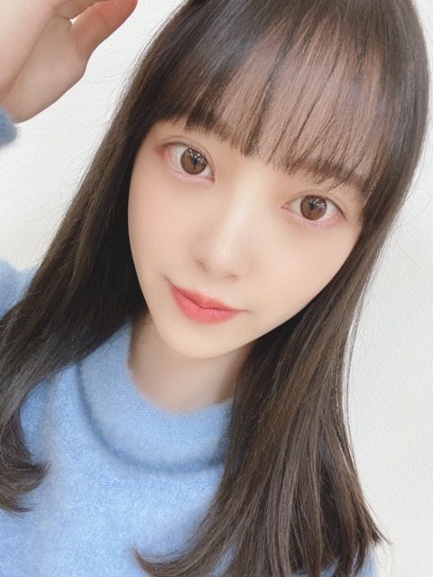
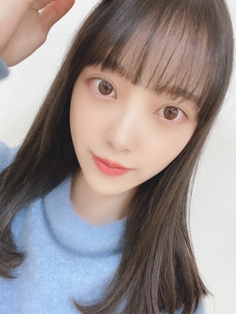

2020/0306Fri暗髪気分
髪色、暗くしました〜
ほぼ黒髪だけど陽に当たると透けて見えるアッシュ系☺︎
髪色の名前はPale Mint Beige だそうです✨


お気に入り♩

One Directionさんの
What a Feeling を聴きながらブログを書いています
The VampsさんもMcFlyさんも好きだから
イギリスのバンドが好きなのかな？
McFlyさんは私がまだ小学生とか中学生の時かな、よく聴いてたのは。懐かしいです...今でももちろん聴きます
I've Got Youは名曲です✨
優しくてポップでおしゃれで...心地良くて好きですね☺︎
イギリス行きたいな〜

今日はMステです
ではは
髪色、暗くしました〜
ほぼ黒髪だけど陽に当たると透けて見えるアッシュ系☺︎
髪色の名前はPale Mint Beige だそうです✨
お気に入り♩

One Directionさんの
What a Feeling を聴きながらブログを書いています
The VampsさんもMcFlyさんも好きだから
イギリスのバンドが好きなのかな？
McFlyさんは私がまだ小学生とか中学生の時かな、よく聴いてたのは。懐かしいです...今でももちろん聴きます
I've Got Youは名曲です✨
優しくてポップでおしゃれで...心地良くて好きですね☺︎
イギリス行きたいな〜
今日はMステです
ではは
2020/03/06 09:36
コメント(300)
未央奈ちゃん♥
ブログの更新、モバメ、ありがとう。❗❗
Mステ、観ました。
「しあわせの保護色」 前向きでかわいいダンスですね。
みおな、まいやんの後ろで歌ってるのが、かわいく、しなやかで、メチャ素敵❗❗
みおな♥ 髪と白いドレスよく合っていて、やさしい雰囲気に魅了されましたよ。♥
お疲れ様です。充分に睡眠とってくださいね。♥
ブログの更新、モバメ、ありがとう。❗❗
Mステ、観ました。
「しあわせの保護色」 前向きでかわいいダンスですね。
みおな、まいやんの後ろで歌ってるのが、かわいく、しなやかで、メチャ素敵❗❗
みおな♥ 髪と白いドレスよく合っていて、やさしい雰囲気に魅了されましたよ。♥
お疲れ様です。充分に睡眠とってくださいね。♥
みおなちゃんMステみたー！
二期生ライブも頑張ってね！
コロナに負けるな！
二期生ライブも頑張ってね！
コロナに負けるな！
ほりっぴーがトリッキー過ぎてトリッピィがポリンキーなので今日はもう寝まーすm(_ _)m
よっ♪美容番長っ♪
(∩￣○￣∩)よっ♪
よっ♪美容番長っ♪
(∩￣○￣∩)よっ♪
未央奈ちゃん、Ⓜ️ステ 観たよー
未央奈ちゃんを確認出来た！
とても可愛いかった

黒髪でも太陽光浴びてアッシュに見えるのは
お洒落で可愛いヘア色だね！未央奈ちゃんに似合ってて
とても可愛い
未央奈ちゃんを確認出来た！
とても可愛いかった
黒髪でも太陽光浴びてアッシュに見えるのは
お洒落で可愛いヘア色だね！未央奈ちゃんに似合ってて
とても可愛い
ここ３日連続や短期間での連続更新嬉しいです。
ファンのみんなも未央奈が元気な姿を少しでも
知る事が出来るので安心感を感じているんじゃないかな。
これも未央奈の誠意や他人への思いやりが成せる事
なんだね。 その何気ない優しさが好きですよ。
Ｍステ見ました。 なかなかに良い曲ですねぇ～。
まいやんのすぐ後ろのポジションなので未央奈の
ショットが多くて「嬉しい～楽しい～、だ～いす～き！」
最後の１枚はＴＧＣのメイクかな？
かなりメリハリのあるメイクで舞台映えしそう・・・
お仕事大変だろうけど、体調管理には気を付けてね。
やっぱ、貴女は素敵な女性です。 すきですよ・・・
これからもみんなに勇気や元気を与えて下さいね。
無理しちゃダメだけどね（笑）
ではは！
ファンのみんなも未央奈が元気な姿を少しでも
知る事が出来るので安心感を感じているんじゃないかな。
これも未央奈の誠意や他人への思いやりが成せる事
なんだね。 その何気ない優しさが好きですよ。
Ｍステ見ました。 なかなかに良い曲ですねぇ～。
まいやんのすぐ後ろのポジションなので未央奈の
ショットが多くて「嬉しい～楽しい～、だ～いす～き！」
最後の１枚はＴＧＣのメイクかな？
かなりメリハリのあるメイクで舞台映えしそう・・・
お仕事大変だろうけど、体調管理には気を付けてね。
やっぱ、貴女は素敵な女性です。 すきですよ・・・
これからもみんなに勇気や元気を与えて下さいね。
無理しちゃダメだけどね（笑）
ではは！
すごく綺麗。すごく美容に気遣っているのがよくわかります。未央奈ちゃん。綺麗。髪色も暗めにしてますます更に大人の女性って感じです。ブログを、よんでると日に日に女子力向上してる姿が、素晴らしく未央奈ちゃんみたいになれる気がします。スキンケアから、化粧まで頑張ってみたい。堀未央奈ちゃんを、視ると私も頑張って未央奈ちゃんに、近付けるように。努力しながらがんばります。
アドバイスください。お願いします。未央奈推しでした。
それではこのへんでブログ更新ありがとー。
アドバイスください。お願いします。未央奈推しでした。
それではこのへんでブログ更新ありがとー。
Mステ観たよ！お疲れ様！
色んな色がありますね～
もう何が何だか（笑）
イギリスですか。
フィッシュ？
チップス？
あ～EU離脱で騒いだ国ですね。
世界の時を司る国ですね。
アーサー王伝説ですかね。
Mステお疲れ様～
もう何が何だか（笑）
イギリスですか。
フィッシュ？
チップス？
あ～EU離脱で騒いだ国ですね。
世界の時を司る国ですね。
アーサー王伝説ですかね。
Mステお疲れ様～
Mステの未央奈めちゃめちゃ可愛かった
コメント遅くなりすみません
ミュージックステーションお疲れ様でした！、タイミングよく乃木坂の歌披露見れました！
堀ちゃんとまいやんが何回か一緒に映ってましたね 、とても素敵な歌であり、ダンスでした。
、とても素敵な歌であり、ダンスでした。
今回のシングル、どのジャケットで買うか非常に悩ましいです
早く発売日迎えて聴きたいです
今回のブログ写真も最高に可愛いければ、黒髪姿もよくお似合いです
自分としては黒髪姿の堀ちゃんが大好きですね
イギリスとはまたオシャレですね 、色々海外へ行っている堀ちゃんが非常に羨ましい
、色々海外へ行っている堀ちゃんが非常に羨ましい
ミュージックステーションお疲れ様でした！、タイミングよく乃木坂の歌披露見れました！
堀ちゃんとまいやんが何回か一緒に映ってましたね
今回のシングル、どのジャケットで買うか非常に悩ましいです
早く発売日迎えて聴きたいです
今回のブログ写真も最高に可愛いければ、黒髪姿もよくお似合いです
自分としては黒髪姿の堀ちゃんが大好きですね
イギリスとはまたオシャレですね
堀ちゃ〜ん今日もブログ更新ありがとう！
Mステ見たよ〜
髪型ハーフアップだったね
堀ちゃん速攻で見つけたからね！
黒髪似合ってるよ、ていうか全部似合います、可愛いです。
インスタ見たよ〜
緊張してたんだね
そんな堀ちゃんもかわいいです。
明日は幻の2期生ライブだね
楽しみ、絶対見ますよ！
アナスターシャ披露あるのかな？期待してます
明日も生配信あるんで今日はゆっくり休んでね
ではでは〜
Mステ見たよ〜
髪型ハーフアップだったね
堀ちゃん速攻で見つけたからね！
黒髪似合ってるよ、ていうか全部似合います、可愛いです。
インスタ見たよ〜
緊張してたんだね
そんな堀ちゃんもかわいいです。
明日は幻の2期生ライブだね
楽しみ、絶対見ますよ！
アナスターシャ披露あるのかな？期待してます
明日も生配信あるんで今日はゆっくり休んでね
ではでは〜
髪型似合っていたよ
未央奈ちゃんは韓国のアーティストやらアメリカの
アーティストも好きじゃない？
イギリスってピーターパンの舞台になった所だよ
未央奈ちゃんは韓国のアーティストやらアメリカの
アーティストも好きじゃない？
イギリスってピーターパンの舞台になった所だよ
その髮色めっちゃ好き！
mステ感動して泣きそうになった！
mステ感動して泣きそうになった！
堀ちゃん
ブログありがとうございます♪♪
黒髪の堀ちゃんが本当に好きです。
清楚で美少女感が溢れています!!
完全な黒髪、じゃないのがまた、おしゃれです
Mステお疲れ様です。
Mステの堀ちゃんの髪型が可愛かったです‼
真っ白な衣装もお似合いでした。
｢しあわせの保護色｣を聞くと、自然と笑顔になれます
けれでも、どこか寂しい?感じがして…泣けます、
応援しています‼
ブログありがとうございます♪♪
黒髪の堀ちゃんが本当に好きです。
清楚で美少女感が溢れています!!
完全な黒髪、じゃないのがまた、おしゃれです
Mステお疲れ様です。
Mステの堀ちゃんの髪型が可愛かったです‼
真っ白な衣装もお似合いでした。
｢しあわせの保護色｣を聞くと、自然と笑顔になれます
けれでも、どこか寂しい?感じがして…泣けます、
応援しています‼
結婚しようね。
未央奈～ こんにちは
連日のブログ更新ありがとうございます。
もちろん、Ｍステ見ましたよ。ちょうどまいやんの後ろだから、いい感じで映っていましたね。
新曲、いい曲ですね。まいやんの笑顔もいいし、だからみんなが「しあわせ」になれる、そんな雰囲気が漂ってきました。
黒髪の未央奈はやっぱりいいなぁ‥‥‥、「緑の黒髪」。
さて、明日は、「２期生ライブ・ＳＨＯＷＲＯＯＭ」ですね。今から楽しみでなりません。
急遽変更しての配信、本当にうれしく思います。
グッズもいいですね。推しメンタオルの文字もカッコいいじゃないですか。
連日の生放送、ありがとうございます。きいちゃんの分もよろしくお願いしますね。
連日のブログ更新ありがとうございます。
もちろん、Ｍステ見ましたよ。ちょうどまいやんの後ろだから、いい感じで映っていましたね。
新曲、いい曲ですね。まいやんの笑顔もいいし、だからみんなが「しあわせ」になれる、そんな雰囲気が漂ってきました。
黒髪の未央奈はやっぱりいいなぁ‥‥‥、「緑の黒髪」。
さて、明日は、「２期生ライブ・ＳＨＯＷＲＯＯＭ」ですね。今から楽しみでなりません。
急遽変更しての配信、本当にうれしく思います。
グッズもいいですね。推しメンタオルの文字もカッコいいじゃないですか。
連日の生放送、ありがとうございます。きいちゃんの分もよろしくお願いしますね。
堀ちゃん、こんばんはー(^o^)
Mステ観たよ～ぅ‼ 堀ちゃんのポジションは3列目だけどカメラにたくさん映っていたから良いポジションです( v^-゜)♪
明日のShowroomが待ちきれないけど楽しみにしてるから、二期生メンバーらしさを爆発させちゃって下さい。
Mステ観たよ～ぅ‼ 堀ちゃんのポジションは3列目だけどカメラにたくさん映っていたから良いポジションです( v^-゜)♪
明日のShowroomが待ちきれないけど楽しみにしてるから、二期生メンバーらしさを爆発させちゃって下さい。
髪色いいね〜！
未央奈ちゃんのイメージにぴったり！
ONE Directionいいよね！
最近はKiss Youとか聴いてるよ
未央奈ちゃんのイメージにぴったり！
ONE Directionいいよね！
最近はKiss Youとか聴いてるよ
いつも更新ありがとう。今日Mステで未央奈ちゃんチェックしたよ！明日幻の2期生ライブもチェックするよ。
未央奈とちょいイギリス行ってみたい
堀さん、こんばんは。沢山ブログ更新してくれて嬉しいです。
髪色お似合いです。黒くも明るくもなるなんて欲張りで良いですね。
Mステ見ました。パフォーマンスに「おめでとう」の感情が溢れてるように見えてとても良かったです。白石さんの周りを回る所が可愛かったので、360度カメラの映像で見たいと思いました。
それとハーフアップとてもお似合いでした。揺れて可愛かったうえに今まででトップレベルに見付けやすかったです。周りのメンバーさん達の髪型によるとは思いますけど、どこに居てどこ向いてても分かりやすくて助かりました。
未央奈の日のSHOWROOM楽しみにしてますね。
髪色お似合いです。黒くも明るくもなるなんて欲張りで良いですね。
Mステ見ました。パフォーマンスに「おめでとう」の感情が溢れてるように見えてとても良かったです。白石さんの周りを回る所が可愛かったので、360度カメラの映像で見たいと思いました。
それとハーフアップとてもお似合いでした。揺れて可愛かったうえに今まででトップレベルに見付けやすかったです。周りのメンバーさん達の髪型によるとは思いますけど、どこに居てどこ向いてても分かりやすくて助かりました。
未央奈の日のSHOWROOM楽しみにしてますね。
Mステ 観て 録画して！！ (^_-)-☆
ps:とうとう 田舎の徳島にも テッシュ1ケース限り（5箱）
お一人様。
マスクは 以前より 買えない！！
一億枚（100×100万枚）あれば 1人一日 賄える！！
良い人だらけの日本人！？ 必要な分だけ 買いましょう！！ (^_^)
ばいばい (@^^)/~~~ お元気で！！
ps:とうとう 田舎の徳島にも テッシュ1ケース限り（5箱）
お一人様。
マスクは 以前より 買えない！！
一億枚（100×100万枚）あれば 1人一日 賄える！！
良い人だらけの日本人！？ 必要な分だけ 買いましょう！！ (^_^)
ばいばい (@^^)/~~~ お元気で！！
みおなちゃん、大好きです
髪色めっちゃ綺麗！
可愛い❤︎
可愛い❤︎
かわ
未央奈の髪色良いねぇ！
今日も可愛いなぁ ！
未央奈聴く音楽俺も好きだと思うな！
今日も可愛いなぁ ！
未央奈聴く音楽俺も好きだと思うな！
未央奈ちゃん更新ありがとー！
Mステ見たよー！
「しあわせの保護色」やっぱりいい曲だね！
心がぽかぽかするような
幸せが溢れるような
そんな感じがしました。
未央奈ちゃんの笑顔もいつもより
もっと穏やかに、キラキラに見えたよ。
あと、まいやんが１期生一人ひとりと目を合わせるところは泣きそうになった。(>_<)
素晴らしいパフォーマンスをありがとう！
これから毎日聴きます！
ではでは～
Mステ見たよー！
「しあわせの保護色」やっぱりいい曲だね！
心がぽかぽかするような
幸せが溢れるような
そんな感じがしました。
未央奈ちゃんの笑顔もいつもより
もっと穏やかに、キラキラに見えたよ。
あと、まいやんが１期生一人ひとりと目を合わせるところは泣きそうになった。(>_<)
素晴らしいパフォーマンスをありがとう！
これから毎日聴きます！
ではでは～
未央奈ちゃん!
ブログ更新ありがとう！
黒髪がかわいいね！
応援してるよ☺️☺️
ブログ更新ありがとう！
黒髪がかわいいね！
応援してるよ☺️☺️
ブログ更新ありがとう！
コメント遅くなってごめんね。
mステ見たよ！755でも言ってたけど、ハーフアップっていう髪型にしたんだね。めっちゃ可愛かったよ！
また他の音楽番組でもどういう髪型になるのか楽しみにしてるね！
コメント遅くなってごめんね。
mステ見たよ！755でも言ってたけど、ハーフアップっていう髪型にしたんだね。めっちゃ可愛かったよ！
また他の音楽番組でもどういう髪型になるのか楽しみにしてるね！
いつもブログ更新ありがとう！
未央奈ちゃんは黒髪が似合うね！
白いコートの画像がすごく彼女感があって、
俺得な画像だったので、すぐ保存しちゃいました！笑
おでこ出してる未央奈ちゃんも
やっぱり可愛いね！
未央奈ちゃんの飾らないところが好きです！
これからも頑張って下さいね！
未央奈ちゃんは黒髪が似合うね！
白いコートの画像がすごく彼女感があって、
俺得な画像だったので、すぐ保存しちゃいました！笑
おでこ出してる未央奈ちゃんも
やっぱり可愛いね！
未央奈ちゃんの飾らないところが好きです！
これからも頑張って下さいね！
かわいいです
いつも応援してます
いつも応援してます
ブログありがとう！！
mステ観たけどみおなの髪型すこすこすぎたよ^_^
mステ観たけどみおなの髪型すこすこすぎたよ^_^
黒髪可愛いなー(*≧з≦)
めっちゃ似合ってる
音楽を聴きながらブログを書くのおしゃれだね！
たくさん更新してくれて本当にありがと！！見ていて元気がでる☀️これからも楽しみにしてる☀️
今日も大好きだよ！
めっちゃ似合ってる
音楽を聴きながらブログを書くのおしゃれだね！
たくさん更新してくれて本当にありがと！！見ていて元気がでる☀️これからも楽しみにしてる☀️
今日も大好きだよ！
未央奈さん連日のブログ更新ありがとうございます✨✨
未央奈さんは普通のことで好きだからと言うけれど、強い意志がないとできない凄いことだと思います。
髪型アンケートもモバメもブログも、この時期に、私たちのことを真剣に想ってくれてるんだなと嬉しくなりました✨
今日の幻の2期生ライブ、楽しみにしています！✨
未央奈さんは普通のことで好きだからと言うけれど、強い意志がないとできない凄いことだと思います。
髪型アンケートもモバメもブログも、この時期に、私たちのことを真剣に想ってくれてるんだなと嬉しくなりました✨
今日の幻の2期生ライブ、楽しみにしています！✨
未央奈ちゃん、おはよう。
Mステでちゃんと見つけたよ〜
泣く準備をして万全の態勢で望んだら
暖かいしあわせな気分になってた。
これが本来曲から受ける印象なのかな。
メンバーも楽しそうだったし…
さっ、もう心を切り替えて
ショールームを待つ事にしましょう。
未央奈の日というなんて
皆も心が暖かいね。同じファンとして
嬉しいです。
でも今日は2期生の日でもあります。
記念日です。
全力で楽しみますよ。
では。
Mステでちゃんと見つけたよ〜
泣く準備をして万全の態勢で望んだら
暖かいしあわせな気分になってた。
これが本来曲から受ける印象なのかな。
メンバーも楽しそうだったし…
さっ、もう心を切り替えて
ショールームを待つ事にしましょう。
未央奈の日というなんて
皆も心が暖かいね。同じファンとして
嬉しいです。
でも今日は2期生の日でもあります。
記念日です。
全力で楽しみますよ。
では。
みおな
今日もお疲れ様です
久々に思いっきり爆睡してました（頭スッキリ）
睡眠の大切さを実感しました
さて、Mステ見ました
まだ3回くらいしか聴いてないけど、メンバーもファンもみんなまいやんが好きだったんだで実感させられる曲だね
みおなも可愛かったです
黒髪みおなは原点って感じがしていいですね
いろんな髪型や色が見れてどれもいいですが、黒髪みおなが原点にして頂点だと思ってます
だけど、大切なのはらしさなので、みおながいいと思った物を選んで頑張って下さい（他人は二の次で大丈夫！）
今日は、幻の2期生ライブ配信なので楽しみにしてます
頑張ってね！
ありがとうございました
今日もお疲れ様です
久々に思いっきり爆睡してました（頭スッキリ）
睡眠の大切さを実感しました
さて、Mステ見ました
まだ3回くらいしか聴いてないけど、メンバーもファンもみんなまいやんが好きだったんだで実感させられる曲だね
みおなも可愛かったです
黒髪みおなは原点って感じがしていいですね
いろんな髪型や色が見れてどれもいいですが、黒髪みおなが原点にして頂点だと思ってます
だけど、大切なのはらしさなので、みおながいいと思った物を選んで頑張って下さい（他人は二の次で大丈夫！）
今日は、幻の2期生ライブ配信なので楽しみにしてます
頑張ってね！
ありがとうございました
未央奈お疲れ様～┏○ﾍﾟｺｯ
やっぱり未央奈は黒髪が似合うよね(*^^*)
やっぱり未央奈は黒髪が似合うよね(*^^*)
髪色は大人っぽくてイイネ！
似合ってるよ
似合ってるよ
堀ちゃん！！更新ありがとう！
黒髪待ってました！！！
ほんとよく似合ってるよ！
イギリスのバンドいいよね〜！
よーく分かります笑
OneDirectionもそうだし
なんと言ってもビートルズ
の曲なんかは世界に誇るものだからね！
私も昨夏にイギリスに
行ってほんとに楽しかったので
堀ちゃんにもオフの日にプリン会で
行って来てほしいです！
素晴らしくいいとこだよ！
行ったらよく分かります！笑
次回の更新も楽しみにしてるよ！
では！！
黒髪待ってました！！！
ほんとよく似合ってるよ！
イギリスのバンドいいよね〜！
よーく分かります笑
OneDirectionもそうだし
なんと言ってもビートルズ
の曲なんかは世界に誇るものだからね！
私も昨夏にイギリスに
行ってほんとに楽しかったので
堀ちゃんにもオフの日にプリン会で
行って来てほしいです！
素晴らしくいいとこだよ！
行ったらよく分かります！笑
次回の更新も楽しみにしてるよ！
では！！
堀ちゃんかわいすぎやん！！
黒髪ばり似合ってるし！ 物凄くいい
堀ちゃんは暗い髪も似合うね。
体調第一で無理せず頑張ってね！！
黒髪ばり似合ってるし！ 物凄くいい
堀ちゃんは暗い髪も似合うね。
体調第一で無理せず頑張ってね！！
堀さん、こんにちは。
暗くした髪色もよくお似合いです。髪色の名前がまたおしゃれですこと。Paleというと青の、mintは緑の、そしてbeigeはそれぞれ黄色のイメージなのですが、その全ての色要素を持っているということなのかな。
僕はミステリー好きなので、名探偵ホームズの故郷であるイギリスにはひとしおの愛着があります。スパイ映画の金字塔007シリーズも母国はイギリスですし。音楽もアメリカとは一味違う曲調が好き。
昨夜は『ミュージックステーション』出演お疲れさまでした。テレビ初披露の『しあわせの保護色』はしっかり見届けました。白石さん中心にダンスがすてきでした。これからたくさん歌番組で披露されますね。楽しみ。
ではまたコメントします。
さらばだ、また会おう！（気球に乗って去りぬ〜）
暗くした髪色もよくお似合いです。髪色の名前がまたおしゃれですこと。Paleというと青の、mintは緑の、そしてbeigeはそれぞれ黄色のイメージなのですが、その全ての色要素を持っているということなのかな。
僕はミステリー好きなので、名探偵ホームズの故郷であるイギリスにはひとしおの愛着があります。スパイ映画の金字塔007シリーズも母国はイギリスですし。音楽もアメリカとは一味違う曲調が好き。
昨夜は『ミュージックステーション』出演お疲れさまでした。テレビ初披露の『しあわせの保護色』はしっかり見届けました。白石さん中心にダンスがすてきでした。これからたくさん歌番組で披露されますね。楽しみ。
ではまたコメントします。
さらばだ、また会おう！（気球に乗って去りぬ〜）
カラーのネーミングって、実は大変なんですよ(^^;
この髪色は天使が舞い降りたくらい可愛いね！
Mステもスゴい可愛かったよ！
コロナ流行ってるから気をつけてね！
Mステもスゴい可愛かったよ！
コロナ流行ってるから気をつけてね！
みおなちゃん更新ありがとう╰(*´︶`*)╯♡
写真もありがと〜(о´∀`о)
黒髪も良きです（╹◡╹）♡
Mステお疲れ様でした(*´-`)
写真もありがと〜(о´∀`о)
黒髪も良きです（╹◡╹）♡
Mステお疲れ様でした(*´-`)
可愛いにも程がある‼︎‼︎
みおちゃんブログ更新ありがとう♪
黒髪可愛い……天使ちゃんじゃん笑
くろかみおちゃん大好き( ´ω` )/
福岡のトゥモロー⊿
黒髪可愛い……天使ちゃんじゃん笑
くろかみおちゃん大好き( ´ω` )/
福岡のトゥモロー⊿
Mステ見たよ～(*´ー｀*)
みおなーー！！
似合っております！
可愛いです！
はい。
どんなのも似合うと思う！
裏山ね。
Mステ楽しみにしてまーす❗️
絶対リアタイでみて、録画もする！
楽しみやお、、はい。
頑張ってね！
似合っております！
可愛いです！
はい。
どんなのも似合うと思う！
裏山ね。
Mステ楽しみにしてまーす❗️
絶対リアタイでみて、録画もする！
楽しみやお、、はい。
頑張ってね！
未央奈からの影響でイギリスバンド聴くようになった！
いい曲多いね！
いい曲多いね！


いきなり、まいやんと桃子と3ショットでおぉってなりました髪型良き
MVとはまた違った振りで、３ブロックで円に分かれてみんなで回ってるの楽しそうで良かった。
あとは、きぃちゃん復帰してくれれば全員そろうね！